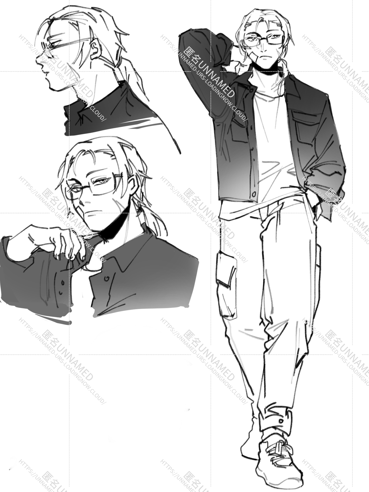

EURS
:…………
Eurs是自设世界观中的登场人物之一，可以视为是男主…应该。
简介
|  |
|---|
| 本名：Eurs |
| 别称：小E |
| 发色：黄发 |
| 瞳色：绿瞳 |
| 身高：173cm |
| 年龄：18→8？→28 |
| 萌点：理工男，眼镜男，直男 |
| 生日：1.13摩羯座 |
相关剧情
E在18岁之前一直过着普通人的生活，直到18岁生日那晚……就像是大家都那么做的一样，吃了生日蛋糕庆祝了，许愿也是希望自己平平安安度过一生等等这样的愿望，然后如同循环往复的每一天一样进入了睡梦。
18岁的第二天，E醒来后感觉脑子昏昏沉沉的，一大堆不属于自己的记忆被强行塞入了自己的脑内。照镜子一看，自己居然变成了8岁的小孩？！E慌慌张张地跑出房间，却发现所有认识他的人都自然而然接受了他只有8岁这个设定。
即使脑内增加的记忆有着如何让自己的身体变成大人的方法，身体变成大人后，大家还是只会认为自己是8岁。反抗多遍的E在母亲怀疑要不要带他看精神病医生的时候放弃了，就这样浑浑噩噩地过起了无止尽的小学生生活。
自己的人生就这么毫无征兆地卡在了8岁，生日对自己来说就如同是噩梦一样——亲朋好友祝贺着自己9岁生日快乐，然后第二天又都默认自己是8岁一样继续着生活。同学换了一届又一届，没有和任何一人成为朋友，就这么在小学二年级循环着。没法忍受这种环境的Eurs只能不断地读书，瞒着父母用电脑网上冲浪，卡着现实世界诡异的bug像模像样在网上赚起了小钱。【具体是做什么，请看其他设定部分】
就这么度过了十年——在一个也是平平无奇的下午，E的父母出了一趟门，然后再也没有回来过。事故的赔偿金很多，继承遗产时，E试着把自己18岁的身份证递了出去，结果出乎人意料，大家自然而然地，就像是被催眠了一样，把所有的遗产转入了E的名下。以为自己终于破局的E睡了一觉后绝望地发现其他人对自己父母的踪迹和遗产处理过程的记忆全被抹去，自己就像是世界的Bug一样，现在是彻彻底底没人关心自己了。
想在新的地方开始新的生活，E把原来父母的房子卖掉，搬进了新买的二手房。在去新房子的路上，E在路边捡到了一只流浪猫。没有人交流陪伴总有一天会疯掉，怀着这样的想法，E把流浪猫捡回了家取名为”三花“。
E没有想到，这次搬家真真正正地改变了自己的生活。偶尔的一次，E采购完生活用品回家，碰巧遇到邻居陈楼顶和匿名出门。”你好，早。“楼抬头，即使隔着两层眼镜，E却能看到她的眼睛直直地对上了自己的。”你是隔壁那家的？你看我就说，怎么可能只有小孩啊，这不是有监护人吗？“匿名在后面自言自语。
脑袋像是被猛敲了一下，开门的手僵在空中。好久没说过话，张开嘴的一瞬间居然发不出声音。就像是过了很久，E终于想起了如何用喉咙发声
”你能看到大人模样的我？“
其他设定
- 所谓”如果BUG影响不到运行，那就不要轻易修改BUG“，E的存在就像是BUG一样，不会被移走，但是当出问题的时候世界会进行自我修改。也如同”替身使者会互相吸引“，所以基本上有些许特异功能的人都会不自觉向楼靠近。
才不是我懒得完善逻辑所以应付过去了- 虽然其他人的眼里E是8岁小孩的模样，但是E的成年身份证和银行卡还有其他账号都可以用。
- 遗产不多，不能养自己一辈子，更何况自己绝对没有退休金，总得找点赚钱的活。有什么不需要亲自到场活很少小孩也能干的还能赚钱的事情呢？E想到了一件事——写短文。一开始只是简单写点知*爽文靠点赞流量赚赚钱，后面的他发现开公众号写黄文——尤其是写中年男人喜欢的黄文，最赚钱也最简单。靠着去其他网站复制粘贴抄袭，自己居然也能拼出一份看上去还蛮行的文，收益也让人满意。而自己因为身份原因，居然没一次被封或者被找上门。就这么，E勉勉强强找了一份能勉强养活自己的见不得人的副业。
- 毕竟写黄文也太过，E偶尔也向妇女杂志投稿——没办法，这种杂志主打一个擦边，科普*生活技巧和花边新闻，稿件的审核和文章的质量都比较简单，而且写擦边文章正是自己拿手的。一来二去，因为质量还不错，E便和杂志社签了合同，每个月固定投稿。负责对接审核的则是F。
- 总感觉自己很短命很容易死，实际上活的还挺健康
- 小时候母亲为了防止自己走丢专门给自己戴了个防走失金属牌，母亲去世之后作为遗物随身佩戴着。
狗牌 - 喜欢喝苦咖啡
一开始只是想要装大人但是之后发现爱喝刷锅水
能力
E的能力和匿的能力一样都是显而易见的能被本人发现的。而相对于匿名简单粗暴的”我是超能机器人“来说，E变大变小的启动能力则更为复杂一点。
简单来说就是：E能随意改变自己身体大小（8岁or28岁），但是如果匿/楼不在身边，大家会一律把他当8岁小孩看待。即使自己看自己是28岁的样子，但是路人看到的E还是8岁的模样。因此，如果E（28）独自上街和人沟通，那么人们的视线会集中在自己肚子周围，不会正视自己。
E+2m内的楼/匿=E的真身（自己是8岁样子那路人看到也是8岁，自己是28岁样子那么路人看到也是28岁）
楼（无论戴不戴眼镜）：看到的永远是E的真身
匿（戴眼镜）：E的真身，不戴眼镜则和路人视角一样。
F：路人
如何切换大小状态：喝一罐罐装啤酒然后把收音机调到13号频道，接着睡过去两小时之后就会切换成功。
副作用：过程因为皮囊大小会变化所以醒来后身上脸上不可避免地会留下一些细微的伤口。脸上经常贴着创口贴和纱布也是这个原因。
代餐曲
1.The Shower
だれもきみのほんとをしらないし
谁都不了解真正的你
ほんとのわたしをだれもしらないわ
真正的我谁都不了解
人物关系
上司：Foenia
CP磕点总结
待补充
其他世界观的TA
相关图片

特别鸣谢及注释
注：以上图片全为站长本人约稿，有些图片因为约稿时间过长已经忘记画师是谁。如需我标注或者不准使用，请在下留言或私聊我。